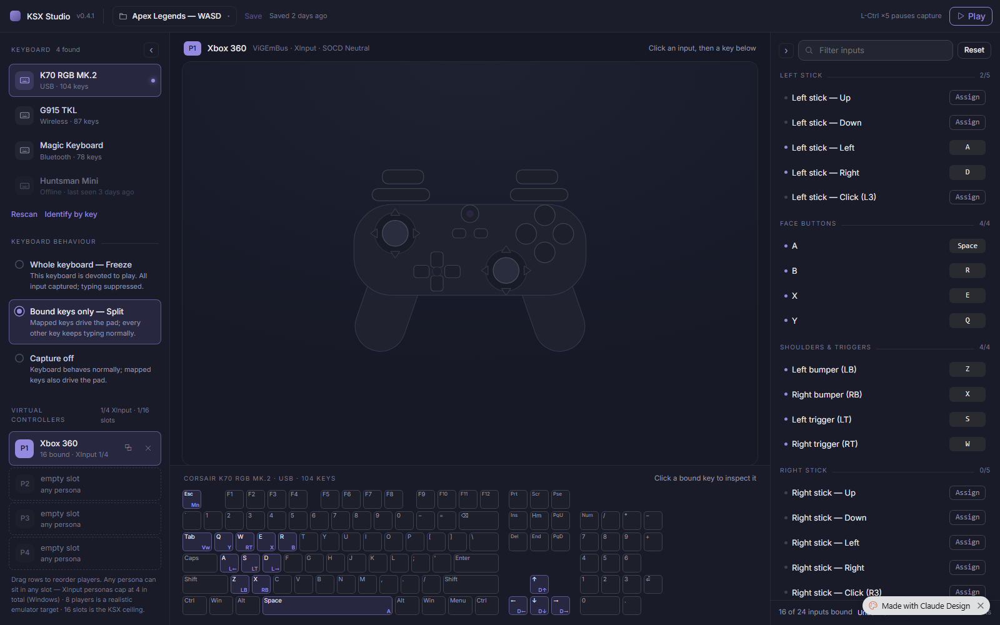
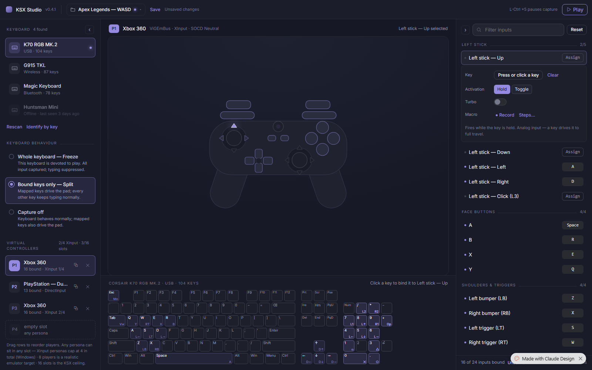
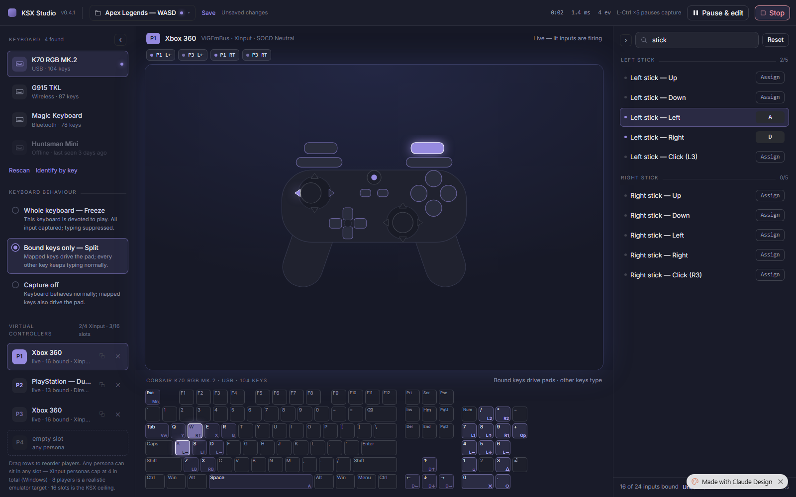
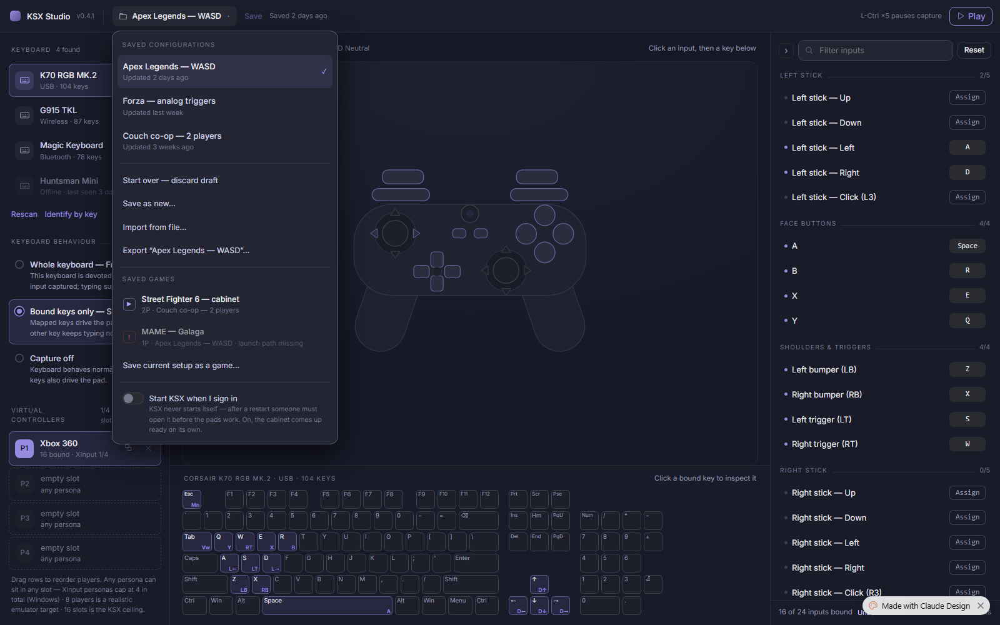
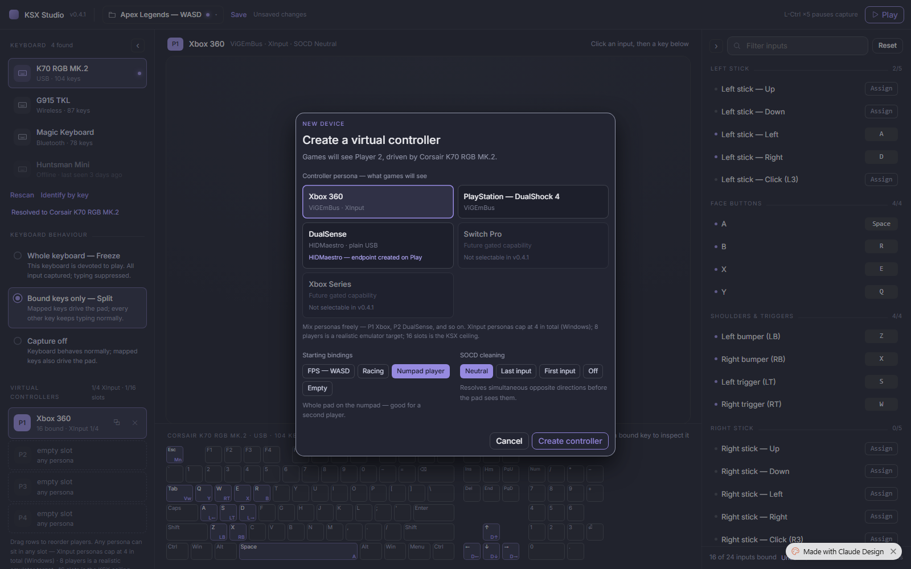
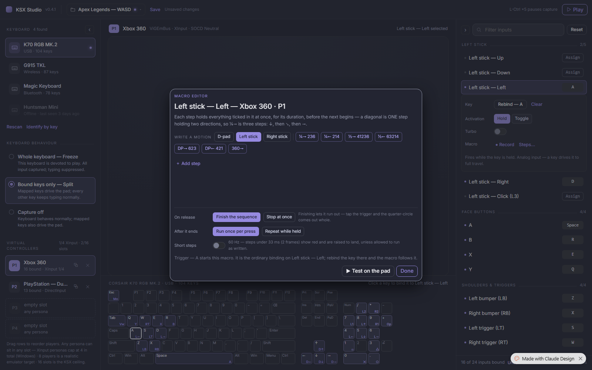
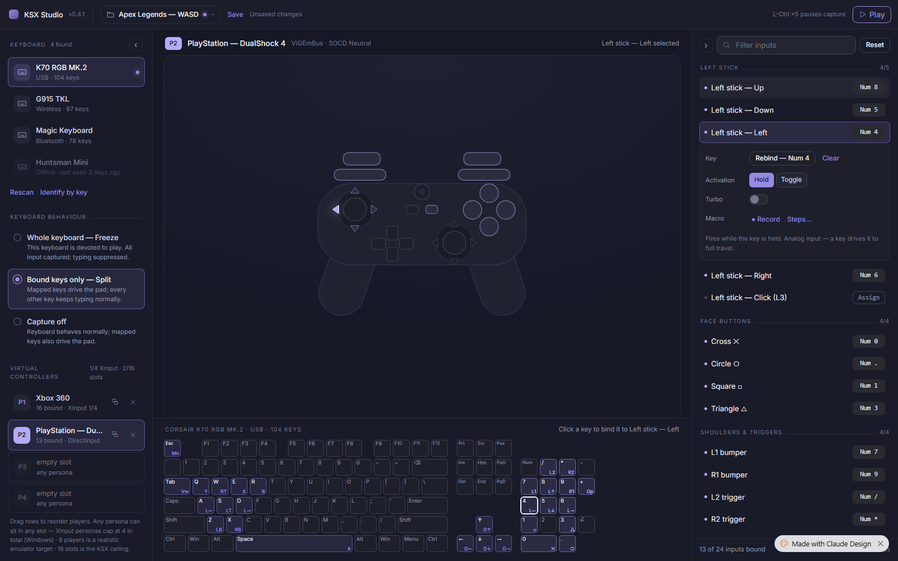

Reverse-engineered from the interactive Claude Design prototype (“Xbox Controller Keyboard Mapper”, artifact 58371700) by driving every flow with an automated browser, screenshotting each state, and reading the design-token source. This document is the ground truth for what the prototype does, in the format the implementation team builds and reviews against.
One window, three panes, four states. The design collapses configuration, mapping, and play into a single always-visible surface: hardware and players on the left, the truth of the pad in the center, the bindings on the right. Nothing navigates away — dialogs handle the two genuinely modal moments (creating a controller, editing a macro), a dropdown handles config management, and everything else edits in place.
Three principles are visible in every screen of the walkthrough:
| Principle | Where it shows |
|---|---|
| Every option carries its consequence. | Radio detail lines (“Mapped keys drive the pad; every other key keeps typing normally”), dialog explainers (“Finishing lets it run out — tap the trigger and the quarter-circle comes out whole”), capacity captions (“XInput personas cap at 4 in total (Windows) · 8 players is a realistic emulator target · 16 slots is the KSX ceiling”). |
| The three readers agree. | The binding list, the pad diagram, and the keyboard diagram are three views of one model. Selecting an input highlights its pad zone and re-labels the keyboard hint; binding a key updates all three in the same beat. |
| State is ambient, not announced. | Live mode changes the whole page’s temperature (glow, ticker, stats, row prefixes) rather than posting notifications. The dirty state is one dot on the config chip plus “Unsaved changes”. |

| Region | Geometry | Contents (top→bottom) |
|---|---|---|
| Title bar | 52 px, full width | Logo + “KSX Studio” + version tag · config chip (name ▾, dirty dot) · Save + saved-ago/“Unsaved changes” · spring · session stats (live only: 0:02 · 1.4 ms · 4 ev) · “L-Ctrl ×5 pauses capture” · Play / Pause & edit + Stop |
| Left pane | 272 px, collapsible → 52 px rail (‹) | KEYBOARD n found + rows · Rescan · Identify by key · identify-result line · KEYBOARD BEHAVIOUR radios ×3 · VIRTUAL CONTROLLERS caption (2/4 XInput · 3/16 slots) + player rows + empty-slot rows (P2–P4 always visible, dashed) · capacity explainer paragraph |
| Center | flexible | Meta line: P-chip · persona name · ViGEmBus · XInput · SOCD Neutral · right-aligned context hint (“Click an input, then a key below” / “input selected” / “Live — lit inputs are firing”) · ticker chip strip (live only) · pad schematic · keyboard header (CORSAIR K70 RGB MK.2 · USB · 104 KEYS + hint) · keyboard diagram |
| Right pane | clamp(300–368 px), collapsible (›) | Filter inputs + Reset · grouped rows: LEFT STICK · FACE BUTTONS · SHOULDERS & TRIGGERS · RIGHT STICK · D-PAD · SYSTEM, each with an n/m count · footer “16 of 24 inputs bound” |
From nocturne-tokens.css (the handoff’s source of truth). The KSX implementation keeps its own palette values and adopts these roles — see §9.
| Token | Value | Role |
|---|---|---|
| --color-bg | #161826 | Window ground |
| --color-surface | #232532 | Cards, dialogs, inputs |
| --color-text | #e9e9ed | Primary text |
| --color-accent | #9184d9 | THE interaction color — deliberately re-derived from the app’s own Pro accent hue (OKLCH H 289.2, L 0.660, C 0.125); the token comment documents the derivation |
| --color-accent-2 | #a7a1db | Secondary accent (same hue, L 0.734) |
| --color-neutral-100…900 | 9-step ramp #f3f5fe → #292b31 | OKLCH-generated on one shared lightness scale with the accent ramps, “so the same step of any role matches the others in visual value” |
| --space-1…8 | 2.8 / 5.6 / 8.4 / 11.2 / 16.8 / 22.4 px | 2.8-px base unit |
| --radius-sm/md/lg | 4 / 8 / 14 px | Chips / controls-cards / dialogs |
| --shadow-sm/md/lg | hairline ring → ring + ambient black | Elevation = “a hairline edge + ambient darkness on a dark theme” |
| Type | Inter; body 15/1.55; headings −0.015em | H6 = uppercase +0.08em kicker — the section-header idiom everywhere |
Fading rules: horizontal dividers fade to transparent over 48 px at both ends — a Nocturne signature (visible under every section kicker). Box outlines and in-control separators stay solid. Motion: two keyframes only — noct-pulse (opacity .32↔1, status dots) and noct-rise (4-px rise + fade, menus/dialogs). Focus: 2-px accent outline, offset 2. Selection states are box-shadow insets of the accent, never fills.


Idle is figure 01. Paused (“Pause & edit”) is specified by the handoff README as pads-disconnected-editing-reenabled; the automated pass did not capture a distinct paused chrome (see §8), and the shipped product’s daemon truth is that pause is a full session teardown — the implementation words its paused state from that truth, not from the prototype.

Row = icon tile · name · transport · n keys meta · presence dot on the selected row. Offline devices stay listed, dimmed, with “Offline · last seen 3 days ago” — dimmed-but-explains-why, never hidden. After Identify resolves, a persistent result line appears under the actions: “Resolved to Corsair K70 RGB MK.2” (visible in 07).
True radio dots (16 px, accent fill + bg-inset when checked). Three options, each title + consequence: Whole keyboard — Freeze / Bound keys only — Split / Capture off. The selected row carries a soft accent-tint card behind it.
Row = P-badge (player color) · persona name · “16 bound · XInput 1/4” (live: “live · 16 bound · …”) · ⧉ duplicate · ✕ remove. Empty slots P2–P4 are permanently visible as dashed rows (“empty slot / any persona”) — the rack shows capacity as space, not as a button. Below: the capacity paragraph in full sentences. A “+ New virtual controller” button exists as well. Drag to reorder (spec’d; not automatable). Removal shows a 6-second undo chip (spec’d in README; not captured — §8).

Row = status dot · input label (“Left stick — Up”) · right-aligned key chip (bound: filled mono chip “Space”; multi-badge possible) or an Assign button. Group headers carry n/m counts that update live (LEFT STICK 2/5 → 3/5 after a bind). Selecting a row expands it in place into the editor:
| Field | Control | Notes |
|---|---|---|
| Key | “Press or click a key” armed chip → “Rebind — W” + Clear | Arming re-targets the pad + keyboard readers |
| Activation | Hold | Toggle segmented pair | |
| Turbo | switch (+ rate control when on) | |
| Macro | • Record · Steps… | Steps… opens the macro editor (5.7) |
| Footer | Explainer line, state-aware: “Fires while the key is held. Analog input — a key drives it to full travel.” → with a macro attached: “…Macro plays 1 step per press.” | |

Alignment note: this dialog matches the shipped ksx macro model almost 1:1 — on-release Finish/Abort, repeat once/while-held/turbo, the 33 ms sampling rule with an allow-short escape, per-step holds. The numpad-notation motion writer and the “show red and raised to land” presentation are the parts still to build.
Pad schematic: flat outline, per-control hit zones, states = selected (lavender fill on the target wedge/button), live-lit (accent glow), dimmed when idle. The persona changes the schematic’s vocabulary, not its geometry, in the prototype. Keyboard diagram: generated key grid with cap labels top-left and bound-input shorts bottom-right (W/RT), player-tinted per owner (P2’s numpad binds render in the second player color — visible in 12), auto-fit to the pane. It is also an input surface: click a key while armed to bind it; click a bound key otherwise to jump to its owner (§6, F5).
Click a device row → selection dot moves; the keyboard diagram re-labels to that device (03).
Or click Identify by key → listening state (04) → press any key on the physical board → the matching row selects, and the persistent “Resolved to …” line appears (visible in 07).
Click a radio row (06). Immediate; the consequence line is the explanation. No confirm — it’s a draft.
Click an empty slot row (or “+ New virtual controller”) → dialog (07).
Pick persona (capacity pre-blocks: unavailable personas are greyed with the reason on the card), starter bindings, SOCD → Create (08, 09). The rack, capacity caption, keyboard tints, and binding pane all update.
Click Assign (or the row, or a pad zone) → armed: expander opens, chip pulses, pad zone highlights, keyboard hint retargets (12).
Press a key (or click one on the keyboard diagram) → bound: chip shows the key, group count increments, keyboard gains the short (13). Esc cancels; Backspace clears (spec).

Observed ≠ README. The handoff README specifies a conflict dialog (Swap / Move here / Keep both with cross-player framing). The prototype as built never opened it in either the same-pad case (14: pressing RT’s W while assigning A jumped to the RT row) or the cross-pad case (30). The navigate-to-owner behavior is itself coherent — show me who owns it, offer Rebind/Clear there — and the implementation may prefer it for the common case, with the dialog reserved for a deliberate “take this key” act. Decide explicitly at M3b; don’t inherit the ambiguity.
Expand a bound row (15) → Hold|Toggle pills (16), Turbo switch, Macro Record/Steps….
Steps… → the macro editor (31, §5.7). After Done, the row’s explainer records the attachment: “Macro plays 1 step per press.” (33).
Type in “Filter inputs” → groups narrow live (21; “stick” leaves only LEFT STICK + RIGHT STICK — still active later in live mode, 23). Reset clears.
Play → live chrome: stats counter, Pause & edit + Stop, stage glow, rack rows prefix “live”, keyboard hint changes (22).
Press bound keys → pad zones + keys light, ticker chips stream per-pad events — one physical key fans out to every pad that binds it (23: W lights P1 RT and P3 RT).
Stop → idle chrome returns (26). Turbo inputs strobe while live (24) — the implementation caps the strobe at 3 Hz (photosensitivity; the prototype’s ~14 Hz is overridden by decision).
Chip ▾ → dropdown (02). Load another config, Start over, Save as new, Import/Export, launch or save Saved Games, autostart.
Prototype bugs already logged for this menu (do not reproduce): saved-game ▶ = load+start in one click (violates the shipped three-state model — load must land on review, Play is its own act); loading a config during a live session kills the session silently; Reset skips the dirty check.
⧉ duplicates into the next slot (10). ✕ removes with a 6-second undo (spec; not captured — §8). Drag reorders with renumbering (spec).
‹ / › collapse either side pane to a rail (27, 36) — the center absorbs the space; state persists per side.
| Context | String |
|---|---|
| Escape hint | L-Ctrl ×5 pauses capture |
| Split radio | Mapped keys drive the pad; every other key keeps typing normally. |
| Freeze radio | This keyboard is devoted to play. All input captured; typing suppressed. |
| Capacity | Drag rows to reorder players. Any persona can sit in any slot — XInput personas cap at 4 in total (Windows) · 8 players is a realistic emulator target · 16 slots is the KSX ceiling. |
| Create lede | Games will see Player 2, driven by Corsair K70 RGB MK.2. |
| DualSense card | HIDMaestro — endpoint created on Play |
| SOCD | Resolves simultaneous opposite directions before the pad sees them. |
| Macro lede | Each step holds everything ticked in it at once, for its duration, before the next begins — a diagonal is ONE step holding two directions, so ¼→ is three steps: ↓, then ↘, then →. |
| On-release | Finishing lets it run out — tap the trigger and the quarter-circle comes out whole. |
| Short steps | 60 Hz — steps under 33 ms (2 frames) show red and are raised to land, unless allowed to run as written. |
| Macro trigger | Trigger — A starts this macro. It is the ordinary binding on Left stick — Left; rebind the key there and the macro follows it. |
| Autostart | KSX never starts itself — after a restart someone must open it before the pads work. On, the cabinet comes up ready on its own. |
| Live keyboard hint | Bound keys drive pads · other keys type |
| Row explainer | Fires while the key is held. Analog input — a key drives it to full travel. |
| Item | Status |
|---|---|
| Conflict dialog (Swap/Move/Keep-both) | Never observed; prototype navigates to the owning row instead (14, 30). Decide the model at M3b. |
| 6-second undo chip on remove | Spec’d in README; not reproduced by the automated pass (empty-slot ✕ is inert; a real removal path needs manual verification). |
| Paused chrome | Pause & edit did not produce a visibly distinct state in the pass; README claims pads-disconnected + editing-reenabled. The implementation words pause from daemon truth (teardown) regardless. |
| Turbo strobe ~14 Hz | Overridden: implementation caps at ≤3 Hz (WCAG 2.3.1). |
| Latency stat “1.4 ms” | Hard-coded in the prototype; the implementation shows no invented numbers (uptime · events · “60 Hz loop” until a measured latency is served). |
| Known prototype bugs (from the plan’s exploration) | Global keydown binds while typing in the filter; Reset skips dirty; saved-game ▶ = load+start; config load kills a live session; dup/create fail silently at capacity; DualSense solo not enforced; conflict counter counts active pad only; shared keycap color = last pad wins; drag-reorder skips capacity revalidation. None are to be reproduced. |
The shipped workspace (branch codex/studio-nocturne-workspace) realizes this design on the KSX architecture: Forma SSR + no-JS twins, the existing token values with Nocturne’s roles (teal = the accent role; lavender = identity), three contexts and both themes. Status at the time of writing:
| Prototype element | Implementation status |
|---|---|
| Three-pane frame, collapse rails | Frame shipped (M2); rails pending polish backlog |
| Rack: reorder / duplicate / remove / SOCD | Shipped as no-JS twins (Move up/down = whole-order; Duplicate composed server-side). Visible empty-slot rows + drag + undo chip: pending |
| Behaviour radios, capacity captions, add form | Shipped (M2a/b); create-dialog form factor pending |
| Persona-aware pad schematic | Shipped better-than-prototype: real Xbox and DualShock silhouettes (M2c); zone interactivity = M4 |
| Binding list, grouped, Sony vocabulary | List + persona vocabulary shipped (M3a) via the mapper’s own zone tables; group headers with n/m counts pending |
| Inline editor (Hold|Toggle, Turbo, capture) | Engine + wire shipped end-to-end (M1b); UI = M3b |
| SOCD Last/First input pills | Engine shipped (M1b); served 5-mode roster already feeds the workspace select |
| Macro editor | Shipped model matches; Nocturne reskin = M4 |
| Live layer (ticker, lighting, stats), title bar, config menu | M4 |
| Keyboard diagram | M4 (keyboard_layout.rs table planned) |